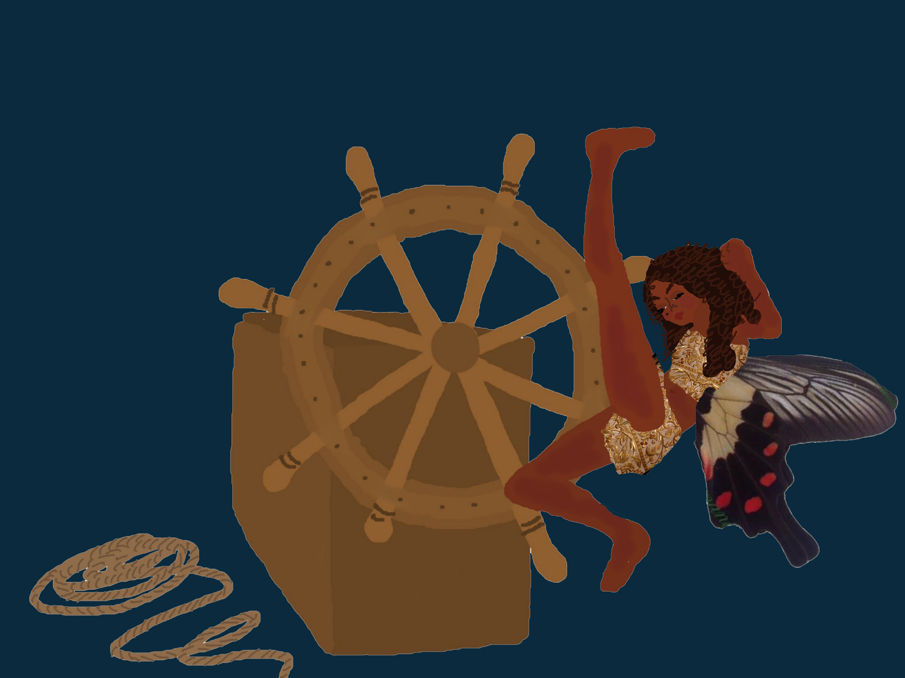
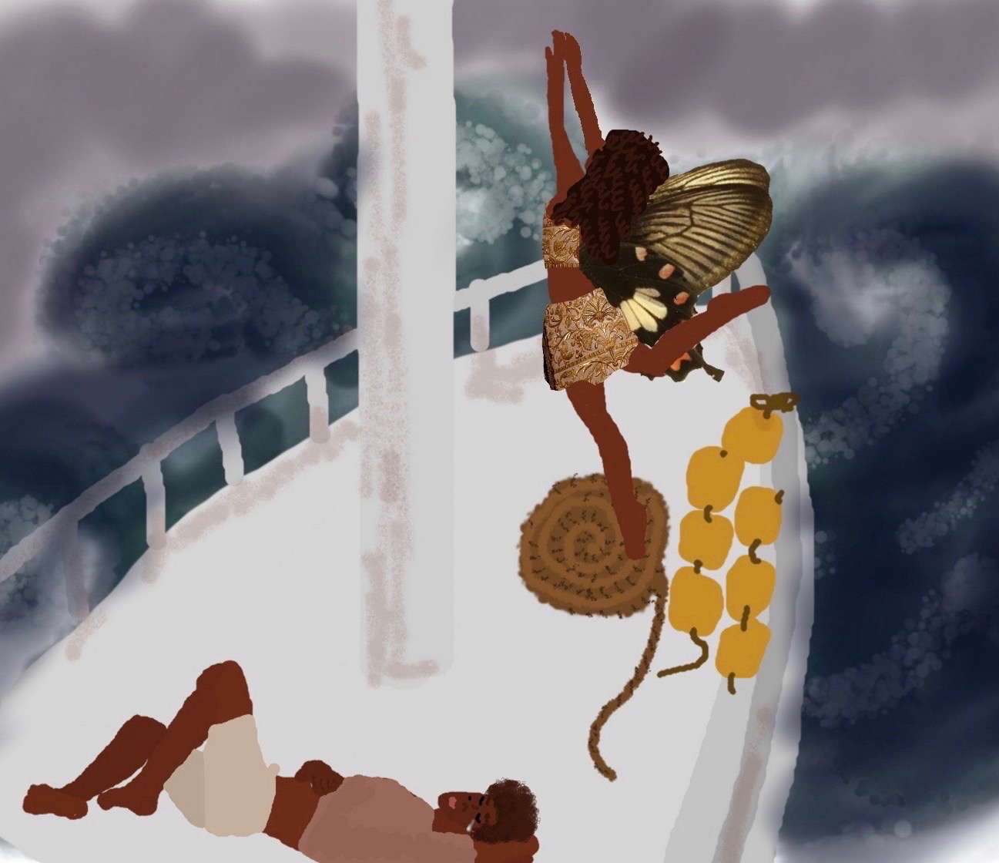
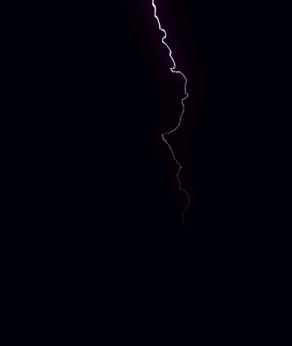
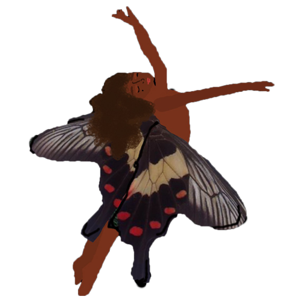
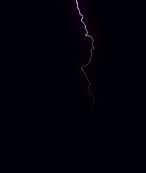
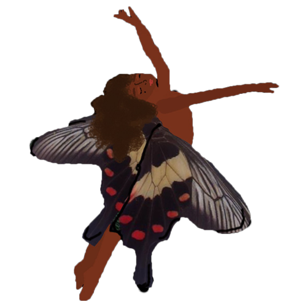
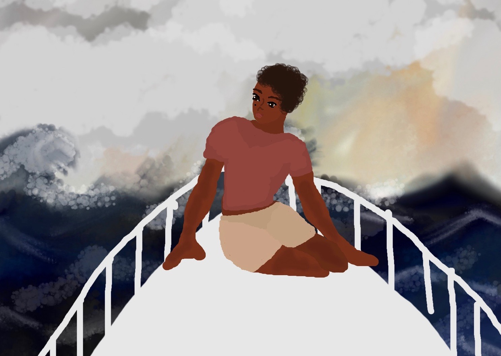

On the ferry they rode, off and away. The world was a puzzle, waiting for them to solve. The girl muted of her desires, the boy supressed of himself, unable to feel. Neither of them would forgive each other, and neither one would agree. They fought over the wheel, both of them wanted to take the lead, and soon they were lost. They were lost at sea, and with happiness the girl jerked the wheel knocking the ferry further into the unknown. The water faded from a light crystal ombre to a darkness almost equal to that of the night, and the sky became dark in response, with a dreary thunderous mountain range of clouds that built up like a sculpture overhead. The sky rumbled and the water became violent, whipping the small ferry against the waves, until it hit as hard as rocks. The boy and the girl flew up into the air, and slammed down again against the deck, the boy crawled over to the rail, dragging Poppy with him and holding on to keep from being tossed away. The sky cried in the heaviest of rains that left them in confusion, so dense there was no separation from the sea itself. The girl in her happiness, balanced her way up to the nose, standing at the front of the boat, feeling the power she felt that she had. She stood up as the lightning struck in an attack that almost filled the entire sky, with a purplish hue that matched her wings.

 



With each bump out of control, the boy began to feel again, in a deep sadness that kept sinking into him. It was a depression so vast, it had the mystery and secrets of the depths beneath him. He cried with the magnitude of the rain that beat down and flooded the deck. He cried himself to sleep, wallowing in the treachery of his soul, like a lost fish dying somewhere alone, trapped in colorful anemones to keep it from seeing the greater beyond. The girl laughed in a drunken fragility, only holding on by the luck of a fool. As they rocked along the boat, the sky began to settle, and the storm calmed to a stop. The boy’s sadness was completely washed away, and the girl’s happiness was balanced by the new sense of sorrow and misery that flooded into her, making her feel uneasy. She threw up over the rail, repeatedly, trying to release the sickness of the waves from inside her.

The boy began to awake, damp and in the sun. The girl in her angst, grabbed onto the wheel queasy and about to burst again, and she knocked the boat into the side of a mossy cliff. The ferry began to sink, and collapse. The boy had become weaker, faded and incomplete, the girl had become more real, strong, and alive, and they sunk into the water that drowned in around them. The stuffed animals sank to the ocean floor, except for a little bunny that Poppy saved behind. They swam up from the sinking wreckage, rising to the surface and heading toward an island nearby.
Next